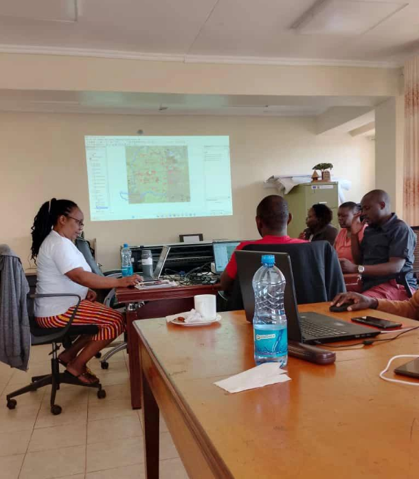
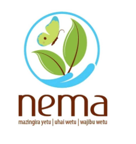
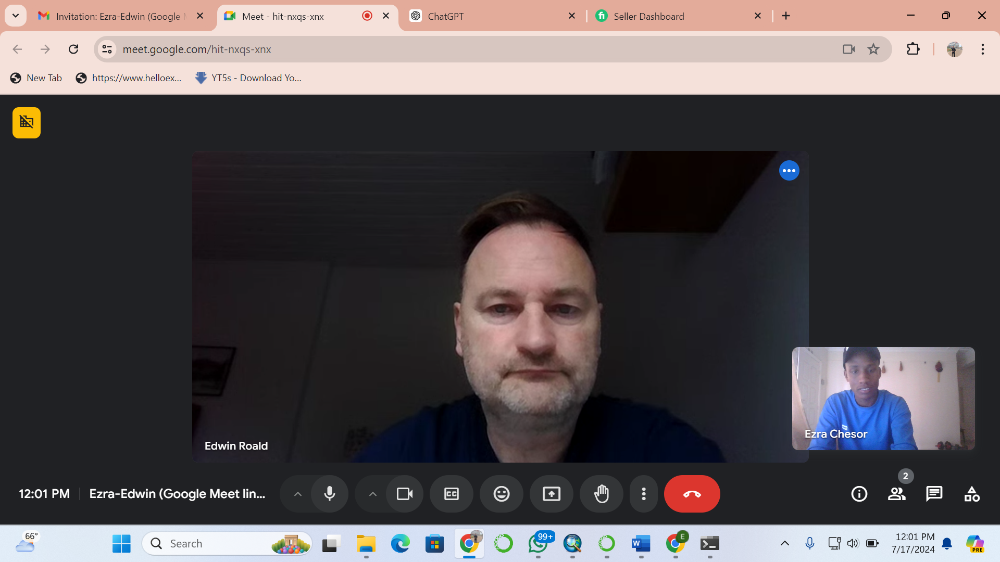

EZRA CHERUIYOT CHESOR
Geospatial Information Scientist & Remote Sensing Expert
Geospatial Information Scientist & Remote Sensing Expert
County Government of Nandi - Ministry of Lands and Physical Planning
Duration: May 2023 – September 2023
Role: Assisted in GIS data collection, analysis, and mapping for land use planning and physical development projects and changing the old cadastre to digital cadastre that has been included in the CSP report 2018 - 2032 and also CIDP.
County Government of Nandi - Ministry of Lands and Physical Planning
Duration: September 2024 – December 2024
Role: Conducted GIS-based spatial analysis and mapping for land administration and planning including making of Kapsabet municipality plan 2018 - 2032, planning for chemase industrial park for Nandi county.
County Government of Nandi - NEMA Offices
Duration: September 1, 2023 – September 30, 2023
Role: Analyzed climate data using GIS tools to support environmental management and policy decisions, including making of CCAP and NCCAP.

Carponbar Company, Iceland (Remote)
Duration: April 2024 – Present
Role: Conducting biomass and carbon estimation for golf clubs using remote sensing and GIS technologies.
